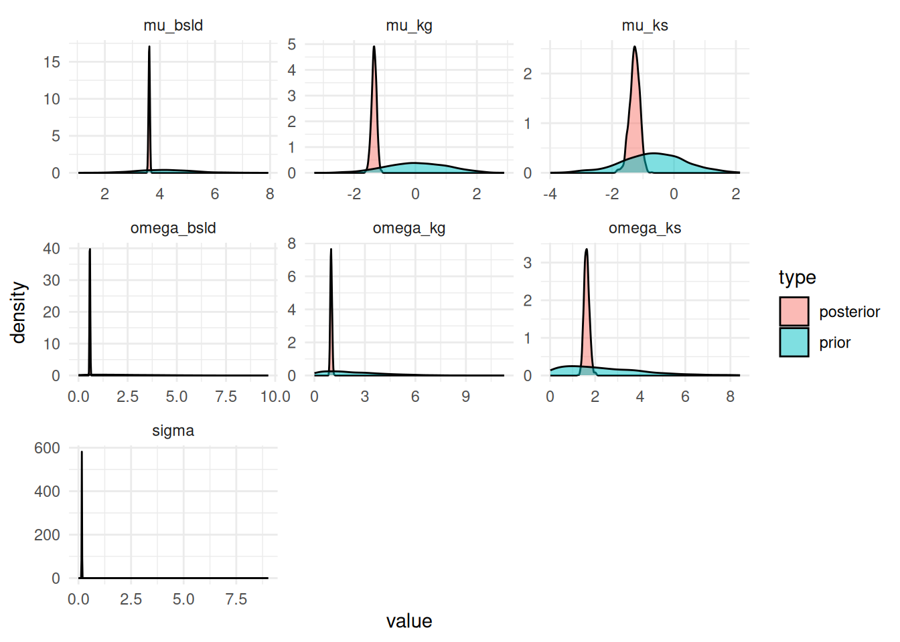

Let’s try to fit the same model now with jmpost. We will use the same data as in the previous notebook.
Setup and load data
First we need to load the necessary packages and set some default options for the MCMC sampling. We also set the theme for the plots to theme_bw with a base size of 12.
Show the code
library(bayesplot)library(brms)library(ggplot2)library(gt)library(here)library(janitor)library(jmpost)library(modelr)library(posterior)library(readxl)library(rstan)library(tidybayes)library(tidyverse)library(truncnorm)if (require(cmdstanr)) {# If cmdstanr is available, instruct brms to use cmdstanr as backend # and cache all Stan binariesoptions(brms.backend ="cmdstanr", cmdstanr_write_stan_file_dir =here("_brms-cache"))dir.create(here("_brms-cache"), FALSE) # create cache directory if not yet available} else { rstan::rstan_options(auto_write =TRUE)}# MCMC optionsoptions(mc.cores =4)ITER <-1000# number of sampling iterations after warm upWARMUP <-2000# number of warm up iterationsCHAINS <-4BAYES.SEED <-878REFRESH <-500theme_set(theme_bw(base_size =12))
We also need a small function definition, which is still missing in brms:
We will use the publicly published tumor size data from the OAK study, see here. In particular we are using the S1 data set, which is the fully anonymized data set used in the publication. For simplicity, we have copied the data set in this GitHub repository.
We start with the subject level data set. For the beginning, we want to treat all observations as if they come from a single arm and single study for now. Therefore we insert constant study and arm values here.
Warning: Dropping 'draws_df' class as required metadata was removed.
Show the code
n_prior_samples <-nrow(post_samples)prior_samples <-data.frame(mu_bsld =rnorm(n_prior_samples, log(65), 1),mu_ks =rnorm(n_prior_samples, log(0.52), 1),mu_kg =rnorm(n_prior_samples, log(1.04), 1),omega_bsld =rtruncnorm(n_prior_samples, a =0, mean =0, sd =3),omega_ks =rtruncnorm(n_prior_samples, a =0, mean =0, sd =3),omega_kg =rtruncnorm(n_prior_samples, a =0, mean =0, sd =3),sigma =rtruncnorm(n_prior_samples, a =0, mean =0, sd =3) ) |>mutate(type ="prior")# Combine the twocombined_samples <-rbind(post_samples, prior_samples) |>pivot_longer(cols =-type, names_to ="parameter", values_to ="value")ggplot(combined_samples, aes(x = value, fill = type)) +geom_density(alpha =0.5) +facet_wrap(~parameter, scales ="free") +theme_minimal()

This looks good, because the priors are covering the range of the posterior samples and are not too informative.
Parameter estimates
Here we need again to be careful: We are interested in the posterior mean estimates of the baseline, shrinkage and growth population rates on the original scale. Because we model them on the log scale as normal distributed, we need to use the mean of the log-normal distribution to get the mean on the original scale.
We can see that these are consistent with the estimates from the brms model earlier.
Separate arm estimates
While there is no general covariates support in jmpost for the longitudinal models as of now, we can obtain separate estimates for the longitudinal model parameters: As detailed in the model specification here, as soon as we have the arm defined, then separate estimates for the arm-specific shrinkage and growth parameters will be obtained: Both the population means and standard deviation parameters are here arm-specific. (Note that this is slightly different from brms where we assumed earlier the same standard deviation independent of the treatment arm.)
So we need to define the subject data accordingly now with the arm information:
We redefine the JointData object and can then fit the model, because the prior specification does not need to change: We assume iid priors on the arm-specific parameters here.
Warning: Dropping 'draws_df' class as required metadata was removed.
Show the code
post_sum_by_arm
variable
mean
median
sd
mad
q5
q95
rhat
ess_bulk
ess_tail
theta_b0
43.7
43.7
0.999
1.05
42.1
45.4
1.00
227
558
theta_ks1
1.18
1.17
0.152
0.146
0.961
1.44
1.00
530
696
theta_ks2
1.07
1.04
0.209
0.183
0.779
1.42
1.00
344
443
theta_kg1
0.444
0.443
0.0490
0.0489
0.365
0.527
1.00
539
712
theta_kg2
0.479
0.478
0.0487
0.0479
0.399
0.563
1.00
735
908
omega_bsld
0.577
0.577
0.0159
0.0153
0.551
0.603
1.00
504
659
omega_ks1
1.34
1.33
0.150
0.152
1.11
1.60
1.00
620
838
omega_ks2
1.76
1.76
0.161
0.150
1.51
2.05
1.00
651
972
omega_kg1
0.765
0.758
0.0710
0.0685
0.662
0.891
0.999
799
943
omega_kg2
1.10
1.10
0.0705
0.0684
0.991
1.22
1.00
649
693
cv_0
0.629
0.628
0.0205
0.0196
0.596
0.662
1.00
504
659
cv_s1
2.33
2.22
0.601
0.547
1.55
3.46
1.00
620
838
cv_s2
4.90
4.58
1.64
1.25
2.96
8.11
1.00
651
972
cv_g1
0.897
0.880
0.112
0.105
0.742
1.10
0.999
799
943
cv_g2
1.55
1.54
0.175
0.163
1.29
1.85
1.00
649
693
sigma
0.161
0.161
0.00224
0.00228
0.157
0.165
1.00
885
881
Here again the shrinkage rate in the treatment arm 1 seems higher than in the treatment arm 2. However, the difference is not as pronounced as in the brms model before with the same standard deviation for both arms. We can again calculate the posterior probability that the shrinkage rate in arm 1 is higher than in arm 2:
Computed from 1000 by 4099 log-likelihood matrix.
Estimate SE
elpd_loo -12931.8 95.6
p_loo 1121.5 36.8
looic 25863.5 191.1
------
MCSE of elpd_loo is NA.
MCSE and ESS estimates assume independent draws (r_eff=1).
Pareto k diagnostic values:
Count Pct. Min. ESS
(-Inf, 0.67] (good) 3652 89.1% 48
(0.67, 1] (bad) 374 9.1% <NA>
(1, Inf) (very bad) 73 1.8% <NA>
See help('pareto-k-diagnostic') for details.
So the model by treatment arm performs here better than the model without treatment arm specific growth and shrinkage parameters.
Tipps and tricks
Also here it is possible to look at the underlying Stan code:
Show the code
tmp <-tempfile(fileext =".stan") # file extension for syntax highlightingwrite_stan(tgi_mod, destination = tmp)file.edit(tmp) # opens the Stan file in the default editor
It is not trivial to transport saved models from one computer to another. This is because cmdstanr only loads the results it currently needs from disk into memory, and thus into the R session. If you want to transport the model to another computer, you need to save the Stan code and the data, and then re-run the model on the other computer. This is because the model object in R is only a reference to the model on disk, not the model itself. Note that there is the $save_object() method, see here, however this leads to very large files (here about 300 MB for one fit) and can thus not be uploaded to typical git repositories. Therefore above we saved interim result objects separately as needed.
It is important to explicitly define the truncation boundaries for the truncated normal priors, because otherwise the MCMC results will not be correct.
Source Code
---title: "2. TGI model minimal workflow with `jmpost`"author: - Daniel Sabanés Bové - Francois Mercierdate: last-modifiededitor_options: chunk_output_type: inlineformat: html: code-fold: show html-math-method: mathjaxcache: true---Let's try to fit the same model now with `jmpost`. We will use the same data as in the previous notebook.## Setup and load data{{< include _setup_and_load.qmd >}}{{< include _load_data.qmd >}}## Data preparationWe start with the subject level data set.For the beginning, we want to treat all observations as if they come from a single arm and single study for now. Therefore we insert constant study and arm values here.```{r}#| label: subj_df_prepsubj_df <-data.frame(id =unique(df$id),arm ="arm",study ="study")subj_data <-DataSubject(data = subj_df,subject ="id",arm ="arm",study ="study")```Next we prepare the longitudinal data object.```{r}#| label: long_df_preplong_df <- df |>select(id, year, sld)long_data <-DataLongitudinal(data = long_df,formula = sld ~ year)```Now we can create the `JointData` object:```{r}#| label: joint_data_prepjoint_data <-DataJoint(subject = subj_data,longitudinal = long_data)```## Model specificationThe statistical model is specified in the `jmpost` vignette [here](https://genentech.github.io/jmpost/main/articles/statistical-specification.html#stein-fojo-model).Here we just want to fit the longitudinal data, therefore:```{r}#| label: tgi_mod_spectgi_mod <-JointModel(longitudinal =LongitudinalSteinFojo(mu_bsld =prior_normal(log(65), 1),mu_ks =prior_normal(log(0.52), 1),mu_kg =prior_normal(log(1.04), 1),omega_bsld =prior_normal(0, 3) |>set_limits(0, Inf),omega_ks =prior_normal(0, 3) |>set_limits(0, Inf),omega_kg =prior_normal(0, 3) |>set_limits(0, Inf),sigma =prior_normal(0, 3) |>set_limits(0, Inf) ))```Note that the priors on the standard deviations, `omega_*` and `sigma`, are truncated to the positive domain. So we used here truncated normal priors.## Fit modelWe can now fit the model using `jmpost`. ```{r}#| label: fit_modelsave_file <-here("session-tgi/jm5.RData")if (file.exists(save_file)) {load(save_file)} else { mcmc_results <-sampleStanModel( tgi_mod,data = joint_data,iter_sampling = ITER,iter_warmup = WARMUP,chains = CHAINS,parallel_chains = CHAINS,thin = CHAINS,seed = BAYES.SEED,refresh = REFRESH )save(mcmc_results, file = save_file)}```Let's check the convergence of the population parameters:```{r}#| label: check_convergence#| dependson: fit_modelvars <-c("lm_sf_mu_bsld","lm_sf_mu_ks","lm_sf_mu_kg","lm_sf_sigma","lm_sf_omega_bsld","lm_sf_omega_ks","lm_sf_omega_kg")save_overall_file <-here("session-tgi/jm5_more.RData")if (file.exists(save_overall_file)) {load(save_overall_file)} else { mcmc_res_cmdstan <- cmdstanr::as.CmdStanMCMC(mcmc_results) mcmc_res_sum <- mcmc_res_cmdstan$summary(vars) vars_draws <- mcmc_res_cmdstan$draws(vars) loo_res <- mcmc_res_cmdstan$loo(r_eff =FALSE)save(mcmc_res_sum, vars_draws, loo_res, file = save_overall_file)}mcmc_res_sum```This looks good, let's check the traceplots:```{r}#| label: plot_trace#| dependson: check_convergence# vars_draws <- mcmc_res_cmdstan$draws(vars)mcmc_trace(vars_draws)```They also look ok, all chains are mixing well in the same range of parameter values.Also here we could look at the pairs plot:```{r}#| label: plot_pairsmcmc_pairs( vars_draws,off_diag_args =list(size =1, alpha =0.1))```## Observation vs. model fitLet's check the fit of the model to the data:```{r}#| label: plot_fit#| dependson: fit_modelpt_subset <-as.character(1:20)save_fit_file <-here("session-tgi/jm5_fit.RData")if (file.exists(save_fit_file)) {load(save_fit_file)} else { fit_subset <-LongitudinalQuantities( mcmc_results, grid =GridObserved(subjects = pt_subset) )save(fit_subset, file = save_fit_file)}autoplot(fit_subset)+labs(x ="Time (years)", y ="SLD (mm)")```So this works very nicely.## Prior vs. posteriorLet's check the prior vs. posterior for the parameters:```{r}#| label: plot_prior_post#| dependson: plot_tracepost_samples <-as_draws_df(vars_draws) |>rename(mu_bsld ="lm_sf_mu_bsld[1]",mu_ks ="lm_sf_mu_ks[1]",mu_kg ="lm_sf_mu_kg[1]",omega_bsld ="lm_sf_omega_bsld[1]",omega_ks ="lm_sf_omega_ks[1]",omega_kg ="lm_sf_omega_kg[1]",sigma = lm_sf_sigma ) |>mutate(type ="posterior") |>select(mu_bsld, mu_ks, mu_kg, omega_bsld, omega_ks, omega_kg, sigma, type)n_prior_samples <-nrow(post_samples)prior_samples <-data.frame(mu_bsld =rnorm(n_prior_samples, log(65), 1),mu_ks =rnorm(n_prior_samples, log(0.52), 1),mu_kg =rnorm(n_prior_samples, log(1.04), 1),omega_bsld =rtruncnorm(n_prior_samples, a =0, mean =0, sd =3),omega_ks =rtruncnorm(n_prior_samples, a =0, mean =0, sd =3),omega_kg =rtruncnorm(n_prior_samples, a =0, mean =0, sd =3),sigma =rtruncnorm(n_prior_samples, a =0, mean =0, sd =3) ) |>mutate(type ="prior")# Combine the twocombined_samples <-rbind(post_samples, prior_samples) |>pivot_longer(cols =-type, names_to ="parameter", values_to ="value")ggplot(combined_samples, aes(x = value, fill = type)) +geom_density(alpha =0.5) +facet_wrap(~parameter, scales ="free") +theme_minimal()```This looks good, because the priors are covering the range of the posterior samples and are not too informative.## Parameter estimatesHere we need again to be careful: We are interested in the posterior mean estimates of the baseline, shrinkage and growth population rates on the original scale. Because we model them on the log scale as normal distributed, we need to use the mean of the log-normal distribution to get the mean on the original scale.```{r}#| label: par_estimates#| dependson: plot_prior_postpost_sum <- post_samples |>mutate(theta_b0 =exp(mu_bsld + omega_bsld^2/2), theta_ks =exp(mu_ks + omega_ks^2/2), theta_kg =exp(mu_kg + omega_kg^2/2),cv_0 =sqrt(exp(omega_bsld^2) -1),cv_s =sqrt(exp(omega_ks^2) -1),cv_g =sqrt(exp(omega_kg^2) -1) ) |>select(theta_b0, theta_ks, theta_kg, omega_bsld, omega_ks, omega_kg, cv_0, cv_s, cv_g, sigma) |>summarize_draws() |>gt() |>fmt_number(n_sigfig =3)post_sum```We can see that these are consistent with the estimates from the `brms` model earlier.## Separate arm estimatesWhile there is no general covariates support in `jmpost` for the longitudinal models as of now, we can obtain separate estimates for the longitudinal model parameters: As detailed in the model specification [here](https://genentech.github.io/jmpost/main/articles/statistical-specification.html#stein-fojo-model), as soon as we have the arm defined, then separate estimates for the arm-specific shrinkage and growth parameters will be obtained: Both the population means and standard deviation parameters are here arm-specific. (Note that this is slightly different from `brms` where we assumed earlier the same standard deviation independent of the treatment arm.)So we need to define the subject data accordingly now with the arm information:```{r}#| label: subj_df_prep_armsubj_df_by_arm <- df |>select(id, arm) |>distinct() |>mutate(study ="study")subj_data_by_arm <-DataSubject(data = subj_df_by_arm,subject ="id",arm ="arm",study ="study")```We redefine the `JointData` object and can then fit the model, because the prior specification does not need to change: We assume iid priors on the arm-specific parameters here.```{r}#| label: joint_data_prep_armjoint_data_by_arm <-DataJoint(subject = subj_data_by_arm,longitudinal = long_data)``````{r}#| label: fit_model_armsave_file <-here("session-tgi/jm6.RData")if (file.exists(save_file)) {load(save_file)} else { mcmc_results_by_arm <-sampleStanModel( tgi_mod,data = joint_data_by_arm,iter_sampling = ITER,iter_warmup = WARMUP,chains = CHAINS,parallel_chains = CHAINS,thin = CHAINS,seed = BAYES.SEED,refresh = REFRESH )save(mcmc_results_by_arm, file = save_file)}```Let's again check the convergence:```{r}#| label: check_convergence_arm#| dependson: fit_model_armvars <-c("lm_sf_mu_bsld","lm_sf_mu_ks","lm_sf_mu_kg","lm_sf_sigma","lm_sf_omega_bsld","lm_sf_omega_ks","lm_sf_omega_kg")save_arm_file <-here("session-tgi/jm6_more.RData")if (file.exists(save_arm_file)) {load(save_arm_file)} else { mcmc_res_cmdstan_by_arm <- cmdstanr::as.CmdStanMCMC(mcmc_results_by_arm) mcmc_res_sum_by_arm <- mcmc_res_cmdstan_by_arm$summary(vars) vars_draws_by_arm <- mcmc_res_cmdstan_by_arm$draws(vars) loo_by_arm <- mcmc_res_cmdstan_by_arm$loo(r_eff =FALSE)save(mcmc_res_sum_by_arm, vars_draws_by_arm, loo_by_arm, file = save_arm_file)}mcmc_res_sum_by_arm```Let's again tabulate the parameter estimates:```{r}#| label: par_estimates_arm#| dependson: check_convergence_armpost_samples_by_arm <-as_draws_df(vars_draws_by_arm) |>rename(mu_bsld ="lm_sf_mu_bsld[1]",mu_ks1 ="lm_sf_mu_ks[1]",mu_ks2 ="lm_sf_mu_ks[2]",mu_kg1 ="lm_sf_mu_kg[1]",mu_kg2 ="lm_sf_mu_kg[2]",omega_bsld ="lm_sf_omega_bsld[1]",omega_ks1 ="lm_sf_omega_ks[1]",omega_ks2 ="lm_sf_omega_ks[2]",omega_kg1 ="lm_sf_omega_kg[1]",omega_kg2 ="lm_sf_omega_kg[2]",sigma = lm_sf_sigma ) |>mutate(theta_b0 =exp(mu_bsld + omega_bsld^2/2), theta_ks1 =exp(mu_ks1 + omega_ks1^2/2), theta_ks2 =exp(mu_ks2 + omega_ks2^2/2),theta_kg1 =exp(mu_kg1 + omega_kg1^2/2),theta_kg2 =exp(mu_kg2 + omega_kg2^2/2),cv_0 =sqrt(exp(omega_bsld^2) -1),cv_s1 =sqrt(exp(omega_ks1^2) -1),cv_s2 =sqrt(exp(omega_ks2^2) -1),cv_g1 =sqrt(exp(omega_kg1^2) -1),cv_g2 =sqrt(exp(omega_kg2^2) -1) ) post_sum_by_arm <- post_samples_by_arm |>select( theta_b0, theta_ks1, theta_ks2, theta_kg1, theta_kg2, omega_bsld, omega_ks1, omega_ks2, omega_kg1, omega_kg2, cv_0, cv_s1, cv_s2, cv_g1, cv_g2, sigma) |>summarize_draws() |>gt() |>fmt_number(n_sigfig =3)post_sum_by_arm```Here again the shrinkage rate in the treatment arm 1 seems higher than in the treatment arm 2. However, the difference is not as pronounced as in the `brms` model before with the same standard deviation for both arms. We can again calculate the posterior probability that the shrinkage rate in arm 1 is higher than in arm 2:```{r}prob_ks1_greater_ks2 <-mean(post_samples_by_arm$theta_ks1 > post_samples_by_arm$theta_ks2)prob_ks1_greater_ks2```So the posterior probability is now only around `r round(prob_ks1_greater_ks2 * 100)`%. ## Model comparison with LOOAs we have seen for `brms`, also for `jmpost` we can easily compute the LOO criterion:```{r}#| label: loo#| dependson: check_convergence# loo_res <- mcmc_res_cmdstan$loo(r_eff = FALSE)loo_res```Underneath this is using the [$loo()](https://mc-stan.org/cmdstanr/reference/fit-method-loo.html) method from `cmdstanr`. And we can compare this to the LOO of the model with separate arm estimates:```{r}#| label: loo_arm#| dependson: check_convergence_arm# loo_by_arm <- mcmc_res_cmdstan_by_arm$loo(r_eff = FALSE)loo_by_arm```So the model by treatment arm performs here better than the model without treatment arm specific growth and shrinkage parameters.## Tipps and tricks- Also here it is possible to look at the underlying Stan code:```{r} #| eval: false #| label: show_stan_code tmp <- tempfile(fileext = ".stan") # file extension for syntax highlighting write_stan(tgi_mod, destination = tmp) file.edit(tmp) # opens the Stan file in the default editor ```- It is not trivial to transport saved models from one computer to another. This is because `cmdstanr` only loads the results it currently needs from disk into memory, and thus into the R session. If you want to transport the model to another computer, you need to save the Stan code and the data, and then re-run the model on the other computer. This is because the model object in R is only a reference to the model on disk, not the model itself. Note that there is the `$save_object()` method, see [here](https://mc-stan.org/cmdstanr/reference/fit-method-save_object.html), however this leads to very large files (here about 300 MB for one fit) and can thus not be uploaded to typical git repositories. Therefore above we saved interim result objects separately as needed.- It is important to explicitly define the truncation boundaries for the truncated normal priors, because otherwise the MCMC results will not be correct.